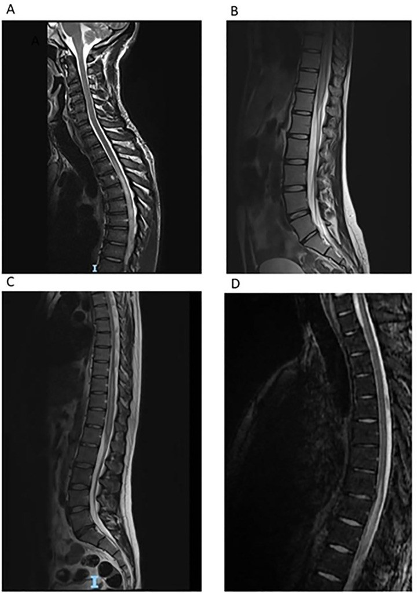
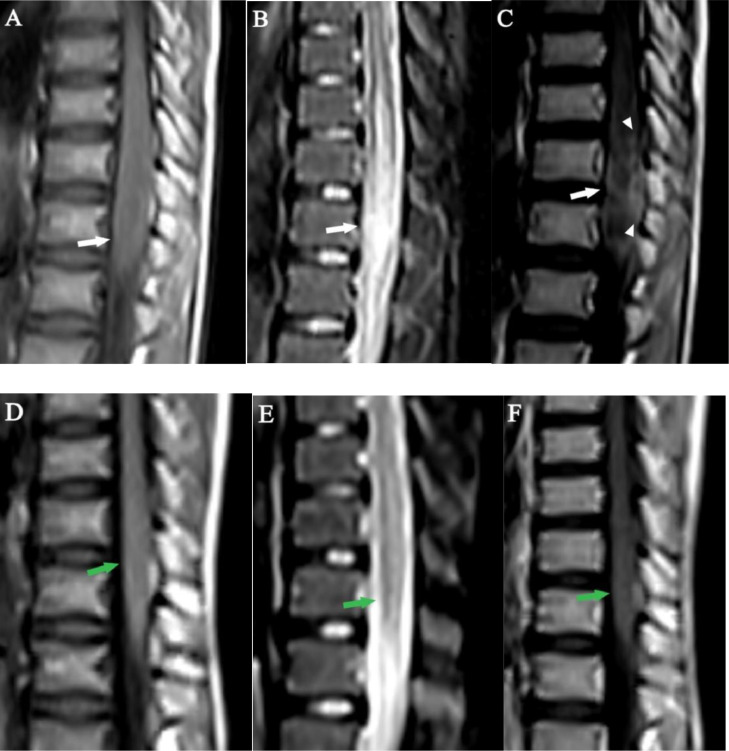
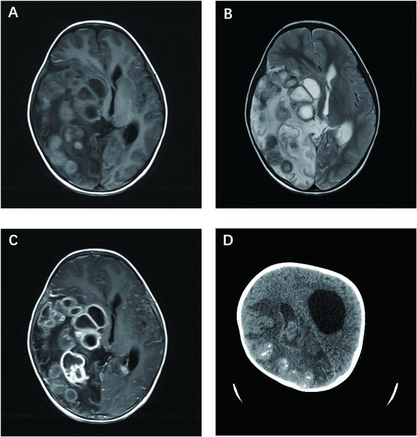

243 — Sán máng thần kinh (neuroschistosomiasis): tủy sống & não / Neuroschistosomiasis
Tags: pattern:viem-tuy pattern:khang-ngam-vong vung:tuy-song vung:nao protocol:MRI-tuy-co-gadolinium protocol:MRI-nao-tuong-phan
Mức chắc chắn (certainty): tổng hợp y văn (literature synthesis) — số liệu từ loạt 4 ca tại trung tâm tham chiếu London (PMC7904161), tổng quan hệ thống 118 ca tủy (PMC12956659), 2 ca tủy ở trẻ có dấu "cuống lá" (PMC11295448) và ca não ở trẻ 3 tuổi (PMC11652511). Ba ca trong quiz là ca nguyên văn, giữ đúng tuổi – dấu hiệu – điều trị của bài gốc.
Bài này nối tiếp 214 – Nhiễm trùng hệ thần kinh trung ương (sán lợn, lao, toxoplasma) và 226 – Tủy mềm không do chấn thương (nhồi máu tủy, SDAVF, NMO). Sán máng là nguyên nhân chữa khỏi được trong nhóm "viêm tủy" — nhưng chỉ khi được nghĩ tới trước khi tủy đã tổn thương không hồi phục.
1. Tổng quan — trứng sán tới tủy bằng đường nào, và vì sao hình ảnh trông như u
- Bệnh học: sán máng (schistosome) là sán lá sống trong máu; trứng không thoát ra được (kẹt trong mô) gây viêm u hạt quanh trứng (periovular granuloma) — đây là cơ chế chính của bệnh, không phải con sán trưởng thành. S. mansoni và S. haematobium → tủy sống; S. japonicum → não (trứng nhỏ, tròn nên dễ đi lạc lên não).
- Vì sao tủy, và vì sao vùng nón/tủy ngực dưới (TẠI SAO hình ảnh khu trú):
- Trứng đi theo đám rối tĩnh mạch Batson (vanless paravertebral venous plexus) theo dòng ngược chiều xuống tủy ngực dưới–nón tủy; một số do sán trưởng thành lạc chỗ đẻ trứng tại chỗ.
- Vùng này được nuôi bởi động mạch tủy trước qua động mạch Adamkiewicz (xuất phát T9–L2), ít tuần hoàn bàng hệ → trứng dễ lắng và tổn thương dễ lan.
- Vì vậy: hội chứng tủy ngực dưới – nón tủy – đuôi ngựa là kiểu trình bệnh điển hình.
- Vì sao MRI trông như u (cơ chế tín hiệu):
- T2/STIR sáng nội tủy = phù (edema) do viêm + ứ dịch ngoại bào; phình tủy vì tổn thương choán chỗ.
- T1 sau tiêm: ngấm thuốc dạng nốt và/hoặc đường = các u hạt quanh trứng phá vỡ hàng rào máu–tủy; tập trung ngoại vi quanh một đường sáng trung tâm trên T2 → dấu "cuống lá" (arborized pattern).
- T1 không tiêm: giảm tín hiệu (phù), ranh giới mờ — không có vôi hóa (khác sán lợn).
- Ngưỡng định lượng nằm lòng:
- Tần suất: 1–4% người nhiễm sán máng có biểu hiện thần kinh; trứng trong tủy 0,3–13% ca nhiễm; ~800 ca được báo cáo từ năm 1930.
- Dịch tễ: 90% ca thần kinh ở châu Phi cận Sahara; loạt tổng quan 118 ca: 79% nam, tuổi trung vị 25 (2–65 tuổi), 60% tổn thương ngực–thắt lưng/nón tủy, 18% chỉ ở nón tủy.
- Dịch não tủy (DNT): protein tăng ở ~90%; eosinophil trong DNT chỉ gặp ở ~40–50%; tế bào tăng kiểu lympho.
- Trễ chẩn đoán: loạt London 16–74 ngày (trung bình 42,15 ngày) từ khám đến praziquantel; ca Mozambique 6 năm; tổng quan 118 ca: 1 tháng – 1 năm.
- Kết cục: tổng quan 118 ca 90% đạt mRS ≤ 2; loạt London chỉ 1/4 ca hồi phục hoàn toàn; Lambertucci 5/23 (21,7%) hồi phục hoàn toàn — trễ chẩn đoán = di chứng vĩnh viễn.
- Điều trị: praziquantel 40–60 mg/kg/ngày, 1–5 ngày (thể thần kinh dùng liều cao/đợt dài hơn), tỷ lệ khỏi sán chung 70–90%; corticoid liều cao giảm dần chậm (có ca taper 66 ngày, có ca 1 năm).
2. Mẫu hình + chẩn đoán phân biệt theo vị trí (Gamut)
A. Tủy sống (thể thường gặp nhất — 3 kiểu lâm sàng: thể tủy, thể tủy–rễ, hội chứng nón–đuôi ngựa):
- Mẫu hình chốt: tăng T2/STIR nội tủy vùng ngực dưới/nón tủy + phình tủy + ngấm thuốc nốt–đường, có thể lan lên tủy ngực giữa; dày rễ đuôi ngựa.
- Gamut "tăng T2 nội tủy": sán máng tủy, viêm tủy cắt ngang/NMOSD/MOGAD, dò động–tĩnh mạch màng cứng (SDAVF), u nội tủy (ependymoma, astrocytoma), nhồi máu tủy (động mạch tủy trước), tủy mềm do xạ, sarcoid, lymphoma.
B. Não (thể giả u — pseudotumoral encephalic schistosomiasis, PES; và thể bệnh não cấp):
- Mẫu hình: một hoặc nhiều khối ngấm thuốc vòng/dạng chùm nho, phù quanh nhiều, có thể vôi hóa; hoặc tổn thương dạng nang lớn nhiều vách (ca trẻ 3 tuổi dưới đây).
- Gamut "khối ngấm vòng ở vùng dịch tễ": sán máng não, sán lợn (neurocysticercosis), lao u hạt (tuberculoma), áp-xe não, toxoplasmosis, di căn, glioma.
C. Câu hỏi lọc bắt buộc trước mọi ca "viêm tủy" không rõ nguyên nhân:
- Có tiếp xúc nước ngọt (tắm, lội, bơi, chèo thuyền, làm ruộng) ở vùng dịch tễ trong 3 năm qua? (ca chậm nhất 29 tháng sau tiếp xúc).
- Có tăng bạch cầu ái toan máu? (chỉ 3/4 ca trong loạt London — không có không loại trừ).
- Đã chụp toàn bộ tủy có gadolinium chưa? (tổn thương có thể ở ngực dưới trong khi triệu chứng "thắt lưng").
3. Bảng so sánh phân biệt (ma trận đối chiếu)
| Thực thể (entity) | Hình ảnh điển hình | Chốt vào (rule-in) | Chốt loại (rule-out) | Gợi ý xác nhận |
|---|---|---|---|---|
| Sán máng tủy (spinal schistosomiasis) | T2 sáng nội tủy ngực dưới/nón tủy, phình tủy, ngấm nốt–đường ngoại vi ("cuống lá"), dày rễ đuôi ngựa | Dịch tễ nước ngọt + T2 sáng nón tủy + ngấm dạng nốt/đường + ELISA DNT dương | Không có phù/ngấm khi chụp lại sau điều trị → xét lại chẩn đoán | MRI toàn tủy có gadolinium; ELISA huyết thanh và DNT; tìm trứng (phân/nước tiểu/rectal snip) |
| NMOSD / viêm tủy cắt ngang | LETM ≥ 3 đốt, tổn thương trung tâm ("H-sign"), ± area postrema, ± dây thị | AQP4/MOG dương + LETM + viêm dây thị | Ngấm dạng nốt rời rạc + dịch tễ nước ngọt + ELISA sán dương → loại | AQP4/MOG; MRI não; đáp ứng corticoid không đủ để chốt |
| SDAVF (dò động–tĩnh mạch màng cứng) | Flow void quanh tủy, phù lan dài từ nón tủy lên, tủy không phình nhiều, ngấm mờ lan tỏa | Flow void + phù dài + nam > 50 tuổi + nặng dần khi đứng | Không flow void + ngấm nốt khu trú → không phải | DSA tủy (chuẩn); MRA tủy |
| U nội tủy (ependymoma) | Khối khu trú, bờ rõ, phình tủy khu trú, có thể xuất huyết (hemosiderin viền), nang | Khối đặc khu trú + bờ rõ + không giảm sau điều trị | Giảm rõ sau praziquantel + corticoid → không phải u | MRI + gadolinium; mô bệnh nếu không đáp ứng |
| Lao cột sống (Pott) | Tổn thương thân đốt + đĩa đệm, áp-xe ngoài màng cứng, chèn ép tủy | Phá hủy đốt–đĩa + áp-xe cạnh sống + vôi hóa | Tủy bình thường, chỉ chèn ép ngoài → không phải tổn thương nội tủy | CT xương + MRI; PCR lao |
| Sán máng não (PES) | Một/nhiều khối ngấm vòng/dạng chùm nho, phù quanh nhiều, ± vôi hóa, thùy nào cũng gặp | Dịch tễ + huyết thanh/DNT dương + đáp ứng praziquantel | Tổn thương không đổi sau 2 đợt điều trị → sinh thiết | MRI não có gadolinium; ELISA; mNGS/mô bệnh |
| Sán lợn não (neurocysticercosis) | Nang + chấm đầu (dot-in-cyst), vôi hóa nhiều ổ nhỏ, thường < 20 mm, ở giao diện vỏ–tủy | Nang có scolex + vôi hóa rải rác + dịch tễ | Khối lớn > 3 cm, phù nhiều, không scolex → nghĩ sán máng/u | MRI; test huyết thanh; CT tìm vôi hóa |

Sagittal T2 ở 4 bệnh nhân (A–D): tăng tín hiệu nội tủy vùng tủy ngực dưới/nón tủy, lan lên tủy ngực giữa với mức độ khác nhau. Đây là mẫu hình rất kín đáo — ca A từng được báo "bình thường" ở tuyến trước. Nguồn: de Wilton A et al., PLoS Negl Trop Dis 2021, PMC7904161, CC BY 4.0.4. Protocol chụp + tiêu chuẩn chẩn đoán + điều trị
Protocol hình ảnh:
- MRI toàn bộ tủy sống (không chỉ đoạn có triệu chứng): sagittal T1, T2, STIR + T1 sau gadolinium + axial T2/T1+C qua đoạn tổn thương. Bắt buộc có gadolinium — không có thuốc thì mất dấu hiệu chốt (ngấm nốt/đường).
- MRI não có gadolinium khi có triệu chứng thần kinh trung ương, co giật, đau đầu, hoặc khi tìm ổ ngoài tủy (thể PES thường một ổ đơn độc, ca trẻ dưới đây có nhiều nang lớn).
- Chụp lại sau 2–6 tháng điều trị để chứng minh giảm phù và giảm ngấm — cũng là bằng chứng hồi cứu cho chẩn đoán.
Tiêu chuẩn chẩn đoán (phân tầng xác suất — dùng khi không thể sinh thiết):
- Có thể (possible): hội chứng tủy ngực dưới/thắt lưng/cùng + bằng chứng dịch tễ tiếp xúc nước ngọt vùng dịch tễ.
- Nhiều khả năng (probable): thêm bằng chứng nhiễm sán (huyết thanh/DNT dương, trứng trong phân/nước tiểu) + loại trừ nguyên nhân viêm tủy khác.
- Xác định (confirmed): mô bệnh thấy trứng/sán trưởng thành trong hệ thần kinh trung ương (hiếm khi làm vì xâm lấn).
Điều trị (ngưỡng và con số):
- Praziquantel 40–60 mg/kg/ngày, chia 3 lần; thể tủy thường 3–5 ngày, có ca 5 ngày (trẻ 12 tuổi), ca não trẻ 3 tuổi dùng 2 đợt × 10 ngày, 40 mg/kg/ngày, cách 6 tuần.
- Corticoid liều cao (methylprednisolone tĩnh mạch rồi prednisolone uống giảm dần chậm): giảm phù và phản ứng viêm quanh trứng, đồng thời dự phòng phản ứng do praziquantel; thời gian taper rất khác nhau (66 ngày – 1 năm).
- Phẫu thuật chỉ khi: chèn ép/chặn dòng DNT, khối lớn tăng áp lực nội sọ, hoặc cần mô bệnh khi chẩn đoán không rõ. Ca trẻ 3 tuổi bị cắt thùy đỉnh–chẩm phải vì khối giả u — tức phẫu thuật có thể là hậu quả của chẩn đoán muộn.
- Không chờ kết quả mô bệnh nếu dịch tễ + hình ảnh + ELISA DNT phù hợp: trễ điều trị là yếu tố tiên lượng xấu nhất.
flowchart TD
A[Liệt hai chân cấp hoặc bán cấp<br/>đau lưng và rối loạn cơ tròn] --> B[Hỏi tiếp xúc nước ngọt vùng dịch tễ<br/>trong 3 năm qua]
B --> C[MRI toàn bộ tủy có gadolinium]
C --> D{T2 sáng nội tủy ngực dưới hoặc nón tủy<br/>có phình tủy và ngấm nốt hay đường?}
D -->|Không| E[Theo DDx khác: NMOSD, SDAVF, u nội tủy]
D -->|Có| F[Xét nghiệm máu và DNT: ELISA sán máng<br/>tế bào, protein, eosinophil; tìm trứng]
F --> G{ELISA DNT dương hoặc eosinophil DNT tăng?}
G -->|Có| H[Điều trị ngay: praziquantel + corticoid liều cao]
G -->|Không nhưng dịch tễ mạnh| H
H --> I[MRI kiểm tra sau 2 đến 6 tháng]
I --> J{Phù và ngấm giảm?}
J -->|Có| K[Chẩn đoán xác lập, theo dõi di chứng]
J -->|Không| L[Xét lại chẩn đoán, cân nhắc sinh thiết]
5. Biến thể bình thường và cạm bẫy
- "MRI bình thường" ở tuyến trước: ca đầu tiên của loạt London được đọc bình thường, chỉ khi hội chẩn chuyên gia mới thấy tăng tín hiệu kín đáo + phình nhẹ nón tủy. Nón tủy là vùng hay bị bỏ qua nhất trên sagittal T2 toàn tủy.
- Chẩn đoán nhầm hay gặp — và cái giá: 3/4 ca bị điều trị như viêm tủy cắt ngang, 1 ca như hội chứng Guillain–Barré (IVIG), 1 ca như NMO (thay huyết tương). Corticoid tình cờ giúp giảm phù nên bệnh nhân khá lên một phần → tự trấn an sai, trong khi praziquantel bị trì hoãn 16–74 ngày.
- Eosinophil máu/DNT không nhạy: máu chỉ 3/4, DNT ~40–50% → không có eosinophil không loại trừ.
- Trứng trong phân/nước tiểu thường ÂM TÍNH (0/4 ca London) vì sán kẹt ở đám rối Batson không đẻ trứng ra đường tiêu hóa/niệu → đừng đòi bằng chứng trứng mới điều trị.
- Huyết thanh dương đơn thuần chưa đủ ở người từ vùng dịch tễ (nhiễm cũ) — phải có hội chứng tủy + hình ảnh, tốt nhất là ELISA DNT.
- Đừng quên phổ tổn thương ngoài tủy: thiếu máu, tăng áp cửa, tiểu máu — nhưng không có tổn thương ngoài thần kinh không loại trừ thể thần kinh (ca trẻ 3 tuổi: siêu âm bụng/niệu và X-quang ngực bình thường, huyết thanh âm tính).
- Thể não dễ bị mổ nhầm vì "giống u": khối ngấm vòng + phù nhiều + vôi hóa ở vùng dịch tễ → luôn hỏi dịch tễ trước khi mổ lấy u.
- Sau điều trị vẫn còn ngấm thuốc một phần ở tháng thứ 2 là bình thường (ca 14 tuổi) — đánh giá lại ở 3–6 tháng, đừng kết luận thất bại quá sớm.
6. Tự lượng giá — Blind Quiz
Ca 1 — Bé trai 12 tuổi, đau lưng cấp 2 tuần, yếu hai chân 3/5, phản xạ gân gối tăng. MRI thắt lưng–cùng:

- Gợi ý: sống ở vùng dịch tễ, thường xuyên tắm hồ; xét nghiệm phân có trứng S. mansoni.
- Câu hỏi: (1) Mô tả tổn thương trên T2 và sau gadolinium? (2) Dấu hiệu nào gợi ý u hạt quanh trứng hơn là u? (3) Điều trị và mốc chụp lại?
Bấm để hiện đáp án (findings + chẩn đoán)
- Dấu hiệu: phình nón tủy, tăng tín hiệu T2 nội tủy lan quanh; sau gadolinium có ngấm dạng đường + nốt ở ngoại vi quanh một đường sáng trung tâm → dấu "cuống lá" (arborized).
- Vì sao gợi ý u hạt: ngấm thuốc rải rác, nhiều ổ nhỏ theo hình nhánh trong khi tủy phình lan tỏa — u thật (ependymoma) thường một khối khu trú, bờ rõ.
- Điều trị: praziquantel 60 mg/kg/ngày × 5 ngày + methylprednisolone tĩnh mạch rồi prednisolone giảm dần; chụp lại 5 tháng — phù và ngấm giảm rõ.
- Nguồn ảnh: Abera MT et al., Radiol Case Rep 2024, PMC11295448, Fig. 1, CC BY-NC-ND 4.0 (giữ nguyên bản).
Ca 2 — Bốn bệnh nhân (21–50 tuổi), cùng triệu chứng đau lưng – yếu chân – bí tiểu. Ảnh T2 sagittal của cả 4:
- Câu hỏi: (1) Điểm chung của 4 ảnh? (2) Vì sao bệnh nhân A từng được trả lời "MRI bình thường"? (3) Xét nghiệm nào chốt chẩn đoán trong loạt ca này?
Bấm để hiện đáp án
- Điểm chung: tăng tín hiệu nội tủy vùng tủy ngực dưới/nón tủy, mức lan khác nhau; có ca lan lên tủy ngực giữa.
- Vì sao "bình thường": thay đổi rất kín đáo (chỉ phù nhẹ + phình nhẹ nón tủy), dễ bị đọc qua nếu không để ý vùng nón tủy và không có gadolinium.
- Chốt: ELISA sán máng trong DNT dương ở cả 4 ca (kèm tăng tế bào lympho trong DNT ở cả 4); huyết thanh dương 4/4; không ca nào có trứng trong phân/nước tiểu.
- Nguồn ảnh: de Wilton A et al., PLoS Negl Trop Dis 2021, PMC7904161, Fig. 3, CC BY 4.0.
Ca 3 — Bé gái 3 tuổi, đi không vững 3 tháng, liệt mặt trái, ngủ gà, sốt từng đợt. MRI não + CT:

- Câu hỏi: (1) Mô tả tổn thương và 3 chẩn đoán phân biệt hàng đầu ở vùng dịch tễ? (2) Vì sao ca này không có bằng chứng ngoài thần kinh mà vẫn là sán máng? (3) Bài học về chỉ định mổ?
Bấm để hiện đáp án
- Dấu hiệu: khối dạng nang lớn nhiều vách thùy thái dương–đỉnh–chẩm phải, phù quanh nhiều, ngấm thuốc vòng sau gadolinium, vôi hóa trên CT → giống áp-xe/u; DDx: sán máng não (PES), sán lợn, lao u hạt/áp-xe, u não.
- Vì sao vẫn là sán máng: mô bệnh thấy u hạt hoại tử chứa trứng S. japonicum, mNGS xác nhận; trong khi siêu âm bụng/niệu, X-quang ngực bình thường và ELISA huyết thanh âm tính (cả gia đình) — thể não đơn độc vẫn xảy ra.
- Bài học: ca này bị cắt thùy đỉnh–chẩm để chẩn đoán và giảm chèn ép; trẻ còn liệt nửa người trái và GOS 4 sau 3 năm. Nếu nghĩ tới sán máng trước mổ, có thể đã điều trị nội khoa trước và tránh cắt thùy.
- Nguồn ảnh: Guo Y et al., Front Immunol 2024, PMC11652511, Fig. 1, CC BY 4.0.
Phản biện (critique): phần lớn bằng chứng là loạt ca và tổng quan hồi cứu, không có RCT; liều praziquantel và thời gian corticoid chưa thống nhất giữa các trung tâm. Vì vậy trong bài này mọi con số được ghi kèm nguồn, và không biến một phác đồ của loạt ca thành "khuyến cáo mạnh".
Bài liên quan chéo
- 200 – Tổng quan Hệ Thần kinh
- 214 – Nhiễm trùng hệ thần kinh trung ương: sán lợn, lao, toxoplasma
- 226 – Tủy mềm không do chấn thương: nhồi máu tủy, SDAVF, NMO
- 220 – Tiếp cận tổn thương ống sống theo 3 khoang
- 215 – Bệnh lý mất myelin: MS, NMOSD, ADEM
- 222 – Viêm đốt sống–đĩa đệm & lao cột sống (Pott)
- 238 – Hội chứng Lemierre: nhiễm khuẩn kỵ khí lan theo đường máu
Không dùng để chẩn đoán độc lập khi chưa có người hướng dẫn.